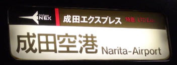
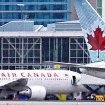
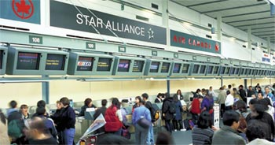
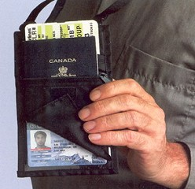
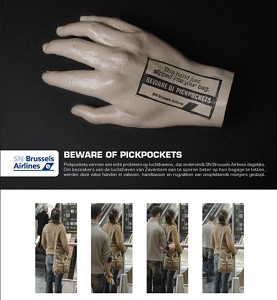

空港之盗贼
冯冯
中国叫它为“机场”，日本人称之为“空港”，我认为“空港”符合英文AIRPORT字义。较能表达它是一个 旅运港口，“机场”较狭义，停放飞机的意味多于港口，因此，本文使用“空港”（Airport），这是就字义，并无偏爱日文之意。英文Air是空，Port是港，中国人译为机场，并未标出是旅运港口，若是军用的，就称为“军事机场”，商用的旅运空站，就必须冠以“民用”，倒不如英文一目了然。英文称军用机场为AirBase空军基地，有别于空港Airport，不似“机场”（Airplane Field）那么暗晦不明。
我个人的意见，未必可以扭转中文“机场”名称，全世界各国都采用Airport(空港)，中国人仍然称为机场（直译可能译为Machine Field）， 会叫老外“一头雾水”，是什么机器（Machine）呀？是推土机？纺织机？打字机？啊！是飞机（Flying Machine）!
言归正传：空港是人来人往，旅客众多，品流复杂，候机、送机、等人、迎客、出闸进站，乱哄哄、忙团团，还有大批的扒手盗贼......此点却非人所熟知。全世界各国的空港均如是，火车站、巴士站，都有扒手。日本的成田空港、羽田空港、东京驿（火车站），旅客成千成万，挤出挤进。专业扒手大肆活动。其中不少是打扮得花枝招展，状若贵妇的女扒手，对你一笑，哈腰鞠躬，或是无意碰你一下，向你道歉，十分有礼，你的钱袋就被妙手空空偷去了，几秒钟之内，就给传递了很多手，你就算看得见，也追不到，美国电视有此特别报导，并非我杜撰。
二００一年八月十四日，中国上海来加拿大的新移民两夫妻，在温哥华国际空港，欢天喜地报到移民关之后，转往国内空港转机往多伦多，进闸时发现手提箱内的证件、机票、登岸证、钞票，全都不翼而飞，损失三万多元美金现钞！夫妻流落于温哥华，身无分文，梦想到了自由天堂，谁料如此下场！
在此之前，大约一个月，是另一家中国大陆新移民，在温哥华国际空港被扒手洗劫，损失四万多元美钞与全部证件，以致流落街头，华侨社团出面救助。但是加拿大政府未见出力救助上述两批被害人，警方毫无线索追查，只说相信是有组织的扒手集团所为，来自香港为多，妙手技高，传递迅速，人手众多，组织庞大，手法狡猾，警方无策对付，只好警告旅客各自小心，勿将钱钞放在行李箱中，最好放在贴身内袋。可是言者谆谆，听者藐藐。在温哥华国际空港，天天有旅客被扒手打劫，以致一贫如洗，流落街头，连身份证居留证也被偷窃，警方说那些证件流入黑市，可以牟利不非，而且可以之复制，再将膺品出售给非法移民，利上加利。
不久之前，一位营商友人，在温哥华空港登机赴美国洛杉机，登机后发现手提包内的钱包失踪了四千美元现钞。他疑心是太太或儿子窃取，和太太大吵了一架，然后要我用“天眼”查证。我说没有“天眼”，但也无需天眼，就可判断，是在空港被扒手光顾了，但此位先生不信，他说“无可能”！他不信温哥华空港的扒手如此神奇。我自己也有一次被扒。西装内袋内的银包夹子忽然失踪，而我并未感觉有人碰触，可见扒手妙手之神奇！不过，被扒的钱夹，并无钞票，也无信用卡，只有一张餐馆顺手牵羊得来的餐巾纸，是偷来的，又被扒了去！因果不爽也！我向来如此把餐巾纸冒充钞票夹在西装内袋的破旧皮夹子，以之愚弄扒手，他得了手打开一看，全是餐纸或草纸，妙不可言！我在偷笑哪！真正藏钞，是在“无人之禁地”，天机不可泄露全部，只可点到为止！你不妨向我看齐，包你“防扒有效”、“气死扒手”！
温哥华空港，被扒破产无路可走的中国大陆来客，其实已有五六次之多，去年二０００年一对北京夫妻被扒八万美元，不明白他们何以不携带“旅行支票”或叫银行电汇？大陆人似乎习惯携带现钞，此地的扒手目标就看准了大陆来客，大陆人今非昔比，现在可有大钱！君不见，温哥华西端最高价的大酒店，也是被大陆客以六千万加元购下，打败了台湾财团。写佛教小品，竟扯到空港扒手，离谱之至！不过，倘若拙文能引起警觉，使大众小心勿受扒劫之灾，岂非好事。钱让扒手劫去，何不留些做慈善救苦救难？那些盗贼，得享不义横财，难逃恶报，只争来早或来迟，因果不可破，他自作孳，不可活，并非我的咒诅。
原载《佛网》网站
2000 年 ── 2002 年